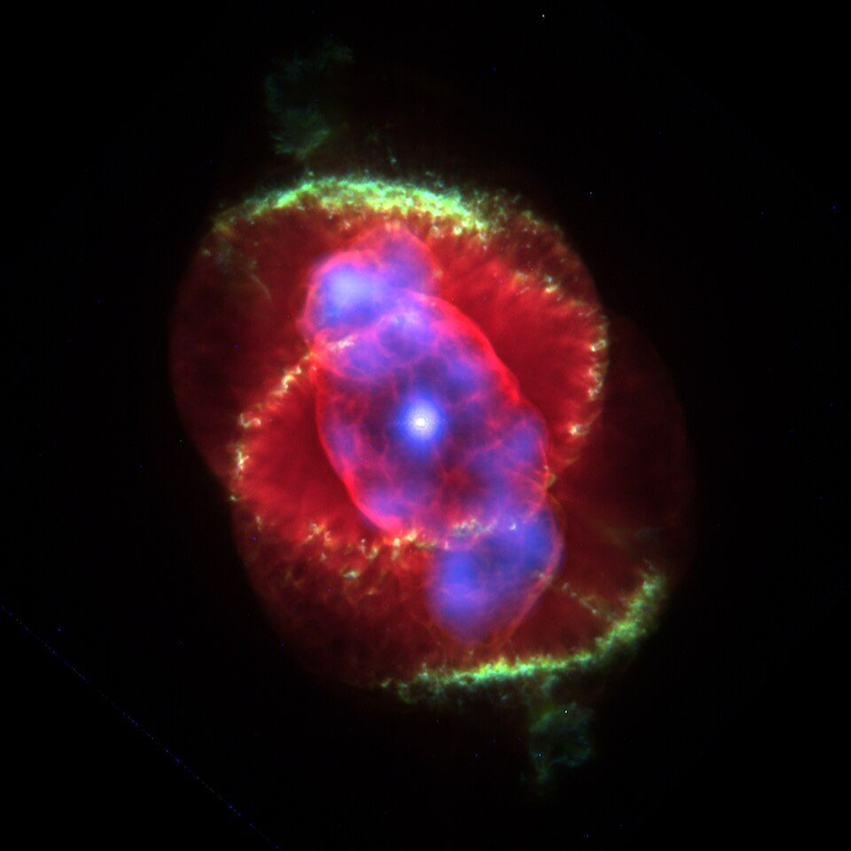

La vida de las estrellas
Del nacimiento en una nebulosa a la muerte como enana blanca, estrella de neutrones o agujero negro: todo depende de la masa.


Las estrellas no son eternas. Nacen, viven y mueren, aunque sus vidas se miden en millones o miles de millones de años. Lo que decide todo su destino es una sola cosa: la masa con la que nacen.
El nacimiento
Las estrellas nacen dentro de grandes nubes frías de gas y polvo, las nebulosas. Cuando una región de la nube se vuelve lo bastante densa, quizá empujada por la explosión de una supernova cercana, empieza a contraerse por su propia gravedad. Al comprimirse se calienta y forma una protoestrella, rodeada de un disco de material del que pueden nacer planetas.
Cuando el centro alcanza unos 10 millones de grados, el hidrógeno empieza a fusionarse en helio. La energía liberada frena el colapso: ha nacido una estrella.


La vida adulta
Durante el 90 % de su vida, una estrella está en la llamada secuencia principal: fusiona hidrógeno en su núcleo y mantiene un equilibrio entre la gravedad, que tira hacia dentro, y la presión del gas caliente, que empuja hacia fuera. El Sol está en esta fase desde hace 4.600 millones de años.
Lo curioso es que las estrellas grandes viven menos. Tienen más combustible, pero lo queman a un ritmo enormemente mayor:
| Masa (Sol = 1) | Vida aproximada | Final |
|---|---|---|
| 0,1 (enana roja) | Billones de años | Enana blanca lentísima |
| 1 (como el Sol) | 10.000 millones de años | Gigante roja y enana blanca |
| 10 | 20 millones de años | Supernova y estrella de neutrones |
| 40 o más | Pocos millones de años | Supernova y agujero negro |
La muerte de una estrella como el Sol
Cuando se acaba el hidrógeno del núcleo, la estrella se hincha y se convierte en una gigante roja, cientos de veces más grande. Después expulsa sus capas exteriores formando una preciosa nebulosa planetaria, y su núcleo queda al descubierto como una enana blanca: una esfera del tamaño de la Tierra pero con la masa de medio Sol. Una cucharadita de su materia pesaría varias toneladas. Se irá enfriando poco a poco durante billones de años.


La muerte de las estrellas gigantes
Las estrellas de más de unas ocho masas solares fabrican elementos cada vez más pesados en su núcleo: carbono, oxígeno, neón, silicio... hasta llegar al hierro. El hierro no libera energía al fusionarse, así que el núcleo se hunde de golpe en menos de un segundo y la estrella estalla en una supernova. Lo que queda es una estrella de neutrones o, si la masa es suficiente, un agujero negro.
Somos polvo de estrellas
Casi todo el carbono de tu cuerpo, el oxígeno que respiras, el calcio de tus huesos y el hierro de tu sangre se fabricaron dentro de estrellas que murieron antes de que naciera el Sol. Los elementos más pesados, como el oro o el uranio, se forman en las explosiones de supernovas y en los choques de estrellas de neutrones.
Vídeos para entenderlo mejor
- La estrella más grande del universo: comparación de tamañosEn Pocas Palabras – Kurzgesagt · 5 M visualizaciones
- Qué son las estrellas que vemos en el cielo Imágenes realesAstronomiaweb · 1,6 M visualizaciones
Los vídeos son de YouTube y de sus autores. Se cargan solo al pulsar sobre ellos. Ver todos los vídeos →